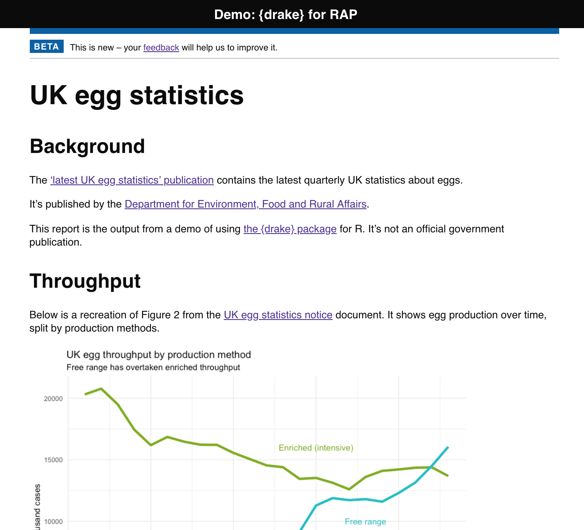
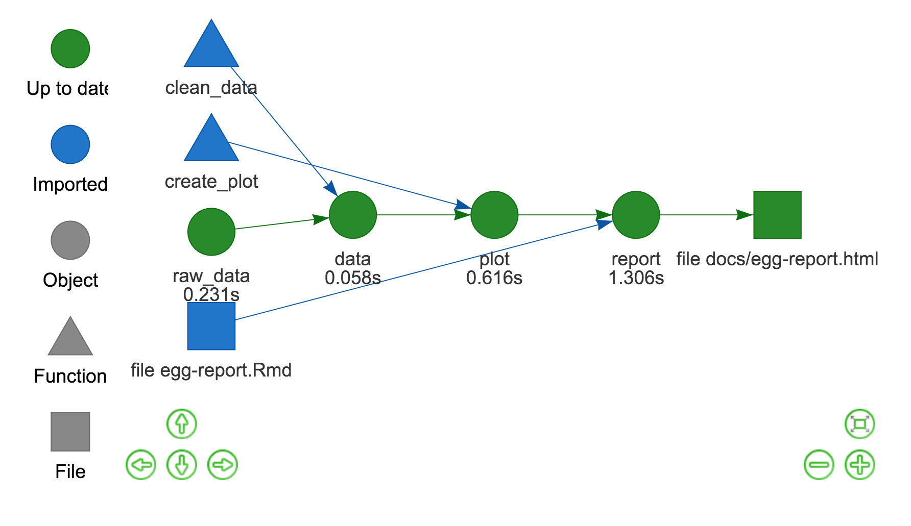
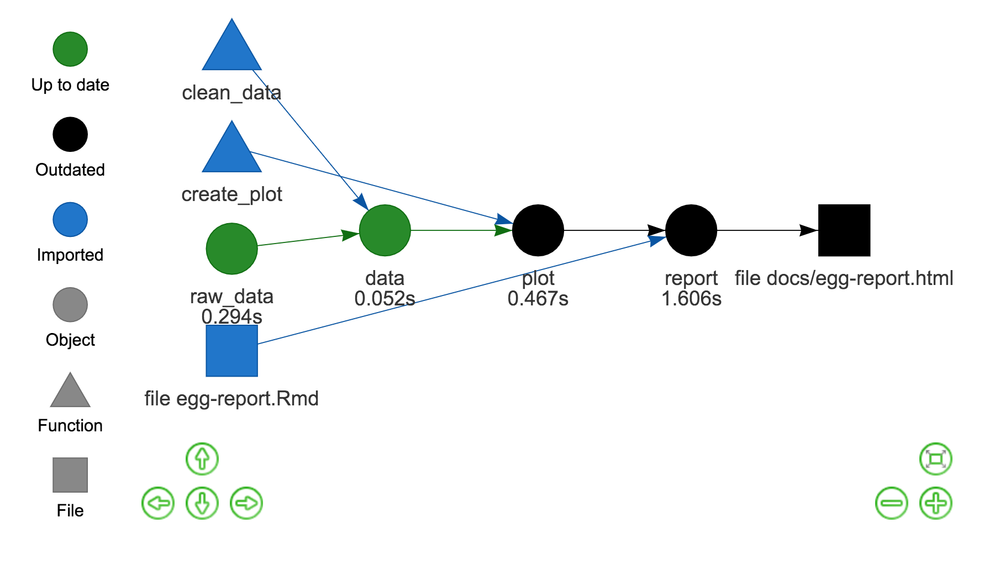

egg_plan <- drake_plan( # Create a drake_plan object called egg_plan
# 1. Read the dataset
raw_data = read_ods(
path = "data/eggs-packers-02may19a.ods",
sheet = "Packers_Annual",
skip = 8
), # separate each function with a comma
# 2. Prepare the data with a bespoke function
# from the functions.R file
data = clean_data(raw_data),
# 3. Generate a plot using a bespoke function
# from the functions.R file
plot = create_plot(data),
# 4. Finally, render the R Markdown report
# drake::knitr_in() marks the .Rmd file as a dependency
# drake::file_out() marks the .HTML as an output
report = rmarkdown::render(
knitr_in("egg-report.Rmd"),
output_file = file_out("docs/egg-report.html"),
quiet = TRUE
)
)tl;dr
The {drake} package records file interdependecies in your analysis. When files are changed, {drake} only re-runs the parts that need to be re-run. This saves time and reduces error.
This could be useful for Reproducible Analytical Pipelines (RAP), an automated approach to producing UK government statistics that minimises error and speeds production.
Make it to make it
Analysis projects can become complicated as multiple inputs, script files and outputs build up.
Can you remember exactly which scripts need to be re-executed after a file changes? Or will you have to re-run the entire project from scratch? This is tedious and open to error if you miss something.
A ‘makefile’ can help you. In short, it’s a text file in which you write each step of your analysis in a recipe-like format. Dependencies between data, code and outputs are recorded.
A makefile ensures that only the affected file and those downstream from it will be re-executed. This saves compute time and means you don’t have to remember any dependencies yourself.
{drake} it to make it
{drake} is a package by Will Landau that gives you makefiles with R syntax. It can be installed with install.packages("drake).
This post contains a very simple example of {drake} in action, but there’s so much more to it. Fortunately, there’s lots of information:
- user manual
- documentation
- cheat sheet by Kirill Müller
- ‘drake for workflow happiness’ slides by Amanda Dobbyn – which embraces the Drake meme
- Garrick Aden-Buie’s introductory talk, including slides and an RStudio Cloud Project
Will Landau has also put together:
- the {learndrake} package to… learn {drake}
- a Shiny app for planning {drake} projects
Demo: {drake} lays an egg
I think there’s potential for {drake} in Reproducible Analytical Pipelines (RAP): a wholly code-based method for producing the UK government’s statistical reports that improves reproducibility and automation, minimises errors and speeds-up production.
I’ve made a very simple {drake} demo for an imaginary RAP project. The demo recreates a very small part of a statistical publication that tracks UK egg production1.
The demo code is on GitHub and the demo report has also been published to the web. Here’s a screenshot of the demo:

Big shout-out to Duncan Garmonsway for the {govdown} package that recreates the style of GOV.UK—the website of the UK government—in R Markdown.
The rest of this post explains the steps in the demo:
1. Prepare the scripts
The repo has three simple scripts2 containing the code for the analysis:
packages.Rloads the packages we need for our analysis withlibrary()functions.Rcontains our own custom functions- egg-report.Rmd is the R Markdown report that will be output to HTML
plan.Ris where the steps of the analysis are written
The plan.R file needs a little more explanation. It contains the drake_plan() function, to which you pass each function required for the analysis. The functions can be in any order; {drake} works out the order from the dependencies between the scripts and outputs.
The demo plan is very simple, with only four functions wrapped inside drake_plan():
2. Load the scripts
The data and code are all in place. How do we run the analysis?
Everything we need is stored in a small file called make.R. It starts by calling source() for each R script:
source(packages.R) # load the packages
source(functions.R) # load the bespoke functions
source(plan.R) # load the planSourcing the plan file results in the drake_plan() function being run. The output is a special drake_plan data frame object, which is called egg_plan in our demo. It has columns called ‘target’ and ‘command’ and a row for each function in our analysis:
egg_plan# A tibble: 4 x 2
target command
<chr> <expr>
1 raw_data read_ods(path = "data/eggs-packers-02may19a.ods", sheet = "Packers_Annual", …
2 data clean_data(raw_data) …
3 plot create_plot(data) …
4 report render(knitr_in("egg-report.Rmd"), output_file = file_out("docs/egg-report.html")…The plan object acts like an instruction booklet, which can be read ‘to each target (data and outputs), apply the named command (the functions of the analysis)’. So the contents of the egg_plan data frame can be read
- Read the raw data (the target) with
readODS::read_ods()(the command) - Clean the data (target) with the custom
clean_data()function (command) - Plot the data (target) with the custom
plot_data()function (command) - Create an R Markdown report (target) with
rmarkdown::render()(command)
So we have the instructions stored in an object. Now we can (optionally) produce a dependency graph of these targets to get an idea of the relationships between the elements of the analysis.
3. Visualise
The first step to create the visual is to extract information about the egg_plan in a configuration (‘config’) list object. One element of the config is, for example, an igraph object that helps construct graphs from your workflow. The function to get this is drake_config().
egg_config <- drake_config(egg_plan)A number of {drake} functions can take the config object and do something with the information inside it. In our case, we’re going to pass the config to vis_drake_graph(), which builds an interactive dependency graph using {visNetwork}.
vis_drake_graph(egg_config)This generates an interactive output (see it here). Here’s a screenshot:

The visualisation is shape-coded by target type (e.g. functions are triangles) and colour-coded to show whether everything is up-to-date (e.g. green if it is). Arrows show the file dependencies (e.g. both the clean_data function and raw_data file come together to produce the data object).
4. Make the plan
Having satisfied yourself that the plan looks correct, running the plan is as simple as:
make(egg_plan)This executes all the instructions laid out in the egg_plan object and our HTML report pops out at the end.
Of course, re-running the plan straight away again does… nothing. No code needs to be re-executed if nothing’s changed!
Side note: the cache
Turns out that {drake} is storing all the intermediate objects that were created when making your plan. They’re cached in a hidden .drake/ folder so they can be retrieved without needing to be re-created.
This means you can use the .drake/ cache to supply objects to an R Markdown file, which is achieved by either readd()ing or loadd()ing them. For example, the plot in the demo R Markdown file was called with loadd(plot).
5. Make a change
If anything changes in our data or code then the downstream targets will be out of sync. Let’s pretend we’ve changed a line of code in the create_plot() function, which could be something is superficial as altering its title. What do you think will happen?
Well, {drake} knows there’s been a change. You can check this by running source("R/functions.R") in make.R again and then run outdated(egg_config). This prints the name of the altered file plus the other files impacted by it.
We can see this by recreating the dependency graph (see it here): the plot target is outdated, as are the targets downstream that depend on it (report and the egg-report.html file). This is indicated by them being coloured black. Here’s a static version:

So now we can see the real power of {drake}, as re-running the plan now will regenerate only the outdated files.
In review
At its simplest, you create a plan.R and you make() it.
Hopefully you’ve seen how {drake}:
- remembers the dependencies between the files of your analysis
- only re-runs what needs to be re-run
I think this alone can help build the reliability and trustworthiness of published statistical reports.
Of course, this is a very simple use of {drake} and should act as a starting point. {drake} does a lot more, like high-performance computing and memory management, that may also come in useful for RAP.
Environment
Session info
Last rendered: 2023-07-25 20:33:27 BSTR version 4.3.1 (2023-06-16)
Platform: aarch64-apple-darwin20 (64-bit)
Running under: macOS Ventura 13.2.1
Matrix products: default
BLAS: /Library/Frameworks/R.framework/Versions/4.3-arm64/Resources/lib/libRblas.0.dylib
LAPACK: /Library/Frameworks/R.framework/Versions/4.3-arm64/Resources/lib/libRlapack.dylib; LAPACK version 3.11.0
locale:
[1] en_US.UTF-8/en_US.UTF-8/en_US.UTF-8/C/en_US.UTF-8/en_US.UTF-8
time zone: Europe/London
tzcode source: internal
attached base packages:
[1] stats graphics grDevices utils datasets methods base
loaded via a namespace (and not attached):
[1] htmlwidgets_1.6.2 compiler_4.3.1 fastmap_1.1.1 cli_3.6.1
[5] tools_4.3.1 htmltools_0.5.5 rstudioapi_0.15.0 yaml_2.3.7
[9] rmarkdown_2.23 knitr_1.43.1 jsonlite_1.8.7 xfun_0.39
[13] digest_0.6.33 rlang_1.1.1 evaluate_0.21 Footnotes
This publication could be a good candidate for RAP: content remains fairly similar between quarterly releases and it’s required to meet high standards of quality because it’s badged as National Statistics.↩︎
You don’t have to restrict yourself to this configuration of scripts, but it can make it easier to handle your project.↩︎
Reuse
CC BY-NC-SA 4.0